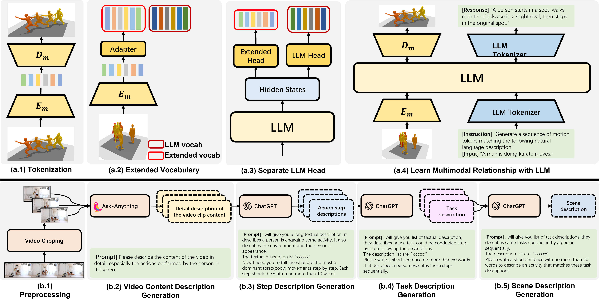

AvatarGPT: All-in-One Framework for Motion Understanding, Planning, Generation and Beyond


We propose an all-in-one framework that unifies high-level and low-level motion-related tasks. It supports synthesizing, forecasting, and understanding human motions, as well as planning, decomposing, and composing motion-related tasks. In addition, we also develop a novel pipeline to construct dataset from in-the-wild videos without human effort in the loop. We build a dataset for fine-tuning high-level human action planning using this proposed pipeline.
Abstract
Large Language Models(LLMs) have shown remarkable emergent abilities in unifying almost all (if not every) NLP tasks. In the human motion-related realm, however, researchers still develop siloed models for each task. Inspired by InstuctGPT, and the generalist concept behind Gato, we introduce AvatarGPT, an All-in-One framework for motion understanding, planning, generations as well as other tasks such as motion in-between synthesis. AvatarGPT treats each task as one type of instruction fine-tuned on the shared LLM. All the tasks are seamlessly interconnected with language as the universal interface, constituting a closed-loop within the framework. To achieve this, human motion sequences are first encoded as discrete tokens, which serve as the extended vocabulary of LLM. Then, an unsupervised pipeline to generate natural language descriptions of human action sequences from in-the-wild videos is developed. Finally, all tasks are jointly trained. Extensive experiments show that AvatarGPT achieves SOTA on low-level tasks, and promising results on high-level tasks, demonstrating the effectiveness of our proposed All-in-One framework. Moreover, for the first time, AvatarGPT enables a principled approach by iterative traversal of the tasks within the closed-loop for unlimited long-motion synthesis.
Video
Overview

The overview of our method.
We use a VQ-VAE to quantize motion sequences to discrete tokens. We then align the discrete motion embeddings with the large language model embeddings through a light-weight adapter layer, we treat it as an extended vocabulary. We introduce separate large language model heads to decode text and motion tokens. It avoids sampling out-of-range tokens. We adopt an encoder-decoder architecture as our large language model and we use instruction fine-tuning as training strategy.
We also propose a novel dataset pipeline. Given a video, we first crop it to multiple short segments. We use a visual large language model to describe the content of each video segments. Then we use ChatGPT to produce textual annotations at various levels of detail from the content description. Our final annotation consists of three levels. The coarse-grained level describes the scene of the entire video, the medium-grained level describes the activity presented in each video segment, and the fine-grained level describes the specific actions in order to execute the activity.